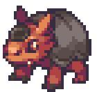
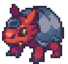
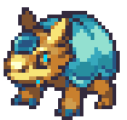

| ← #019 ??? | #020 Armado | #021 Armadil → |
|---|
| Normal Form | Corodex Description | Type |
|---|---|---|
|  | Armado are always eager to fight. They sometimes even attack humans if there are no Coromon around. |  |
| Potent Form | Locations Data | Evolution Line |
|  | - Radiant Park - Woodlow Forest - Thunderous Cave |
- Armado - Armadil (Level 18) - ??? (Level ???) |
| Perfect Form | Traits | |
|  | - Hoarder (10/70) - Thick Skin (30/70) - Vaccinated (30/70) |
| Stats | |
|---|---|
| HP | 55 |
| Attack | 45 |
| Defense | 55 |
| Sp. Attack | 20 |
| Sp. Defense | 20 |
| Speed | 20 |
| Skill set | |
|---|---|
| Level 1 | Scratch |
| Level 3 | Concentrate |
| Level 8 | Toughen Up |
| Level 13 | Double Slash |
| Level 17 | Distract |